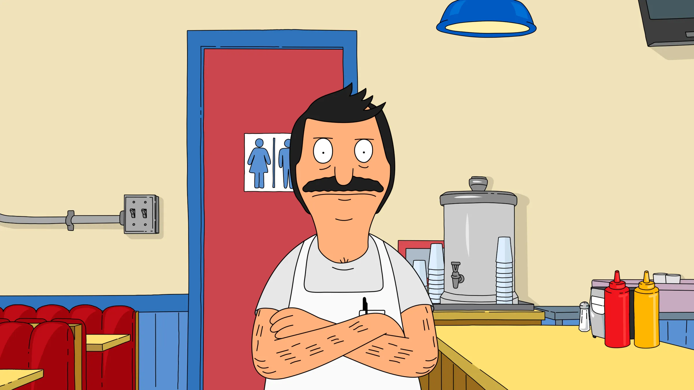

Mission Statement: My goal is to create good burgers and feed the world.
- Education
- Whatever Elementry: 1983-1992
- Something High School: 1992-1996
- Experience
- Position: Cook 1984-1994
Location: Big Bob's Diner
- Position: Restaurateur 1998-2023
Location: Bob's Burgers
- Position: Subsitute Teacher December, 2013
Location: Wagstaff Elementry School
- Skills
- Awards
- 15 Annie Award Nominations
- 11 Writers Guild of America Award nominations under the Television: Animation catergory
- 2014 Emmy Award for Outstanding Animated Program for "Mazel Tina"
- 2016 John Roberts was nominated for an Emmy award for Outstanding Character Voice-Over
- 2016 Outstanding Achievement in Casting-Television Animation: Julie Ashton Barson
- 2016 Outstanding Achievement in Voice Acting in an Animated Television/Broadcast Production: Kristen Schaal for "Hawk & Chick
- 2016 Outstanding Achievement in Writing in an Animated Televison/Broadcast Production: Steven Davis and Kelvin Yu for "The Hautening"
- 2017 Emmy Award for Outstanding Animated Program for "Bob Actually"
- 2017 Outstanding Achievement in Writing in an Animated Television/Broadcast Production: Lizzie and Wendy Molyneux for "The Hormone-iums"
- 2017 Kevin Kline was nominated for an Emmy award for Outstanding Character Voice-Over
- 2017 Outstanding Achievement in Editorial in an Animated Television/Broadcast Production: Mark Seymour, Chuck Smith, and Eric Davidson for "Sea Me Now"
- 2017 Best General Audience Animated Telvision/Broadcast Production: Bob's Burgers for "Glued, Where's My Bob?"
- 2020 Outstanding Achievemnet for Voice Acting in an Animated Television/Broadcast Production: H. Jon Benjamin for "Roamin' Bob-iday"
- 2022 ACE Eddie Award for "Vampire Disco Death Dance" by Jeremy Reuben
- 2023 Best Mature Audience Animated Television/Broadcast Production: Bob's Burgers for "Some Like it Bot Part 1: Eighth Grade Runner"
Back to Top